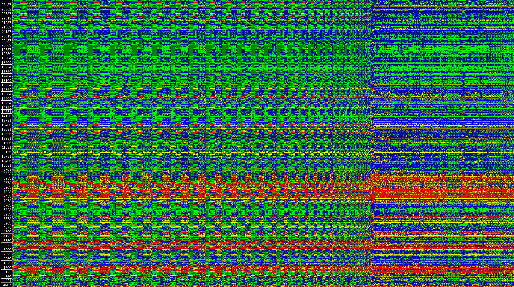

[re|in]verse
When: Nobel Week Lights 2023, December 02 to 10, 16:00 - 22:00
Where: Klara Mälarstrand, under Central Bron, Stockholm
[re|in]verse is a light, sound and water installation that reveals the extraordinary software layers involved in the core matrix operations that power the scientific work of Nobel laureates and their teams. The installation is made of light and sound patterns that reflect on the amount of computation, data, as well as on the speed of the software involved. The patterns generated are based on various matrix operations that are often used in scientific research.
Context
In 1932, Werner Heisenberg was awarded the Nobel Prize in Physics for modeling quantum mechanics, then an emerging field of research, using matrices, which are powerful mathematical tools. Living in a pre-computer world, Heisenberg would calculate and manipulate matrices by hand, with pen and paper. In our day and age, quantum mechanics researchers still work with these matrices and continue Heisenberg's work, but with computers. It may appear simpler, but thousands of software operations are happening very quickly behind each push of a key.
Throughout the last decades, several Nobel laureates have heavily relied on image analysis, pattern recognition and predictive modeling. In all of these mathematical and software tools, the notion of matrix is a central part. It is the core structure to organize, analyse, store, exchange, transform and make sense of complex data retrieved from the physical world. The matrices used in science are very large arrays that contain millions to billions of numbers that capture fractions of our physical environment. The software packages that manipulate these matrices must be mathematically correct, as well as efficient in order to support the analysis of gigantic amounts of data in a reasonable time. This is why several software tools have emerged, each of them dedicated to matrices of different sizes, shapes and content. The quest for efficiency has motivated recent advances in machine learning for matrix computation.
The installation
[re|in]verse is a light, sound and water work placed in the underpass under Centralbron. It animates matrices by projecting light beams onto the closest pillars, thus representing the data as a new matrix.
Matrices all the way down
Matrices are found on different levels of the installation. The data, that is visualized and sonified, is the software execution trace of different matrix operations (multiplication, singular value decomposition, normaliziation, inversion, Hessenberg decomposition). The matrices used to make these operations were randomly generated, and can be either completely random, diagonal, upper/lower triangular, Vandermonde. They are all invertible and their dimensions are 32 x 32 (in reference to 1932, the year in which Heisenberg was awarded the Nobel Prize).
Music
Time and time signatures
The overall form of the piece is a 2 + 1 (60s movement + 30s "break") form, which mirrors the most common form in the software. Some operations are further subdivided in three and some in 4 with a recurring 1 + 2 + 1 pattern. The music reflects this by the amplitude of pulses and how often chords are changed.
Each block of activity in the software execution generally contains 32 "beats", or iterations, coinciding with the dimensionality of the matrix. Similarly, every movement in the music has 32 pulses.
A very common feature in the software execution is an accellerando, as iterations work on smaller and smaller subsections of the matrix. The music reflects this through the modulation of sine waves in the "break" part.
| Multiply |
Storform approx 2 + 1. First part has a repeating pattern in 4/4 1 + 2 + 1 with accelerando to the second part. Second part has no such clear structure, but it is steadily doing a ritardando. |
|---|---|
| Singular value decomposition (SVD) | Same pattern as Multiply. |
| Normalize | Very short, just init burst and then a slightly longer burst of noise. |
| Inverse |
Init burst. 3 longer sections, the first slightly shorter. |
| Hessenberg decomposition |
Varies based on the source matrix. Diagonal: Instead of an accelerando, a ritardando over the entire trace. 1 long section only, apart from the init burst. Random: 4 + 4 + 7 form. |
{kind=link}
{kind=link}
{kind=link}
{kind=link}
{kind=link}
{kind=link}
{kind=link}
{kind=link}
{kind=link}
{kind=link}

Spectrogram of the Hessenberg decomposition of a random matrix.
Click on the operation names above to see more.
Harmony
Like the 32 rows and columns of the matrices we have been experimenting on, the harmony of the piece consists of 32 chords. The tuning system used is 53-EDO and the chords, in ups and downs notation, are Cv7, C^m7, CvM9 and Csus24, transposed a fifth up eight times. To determine the next chord, a matrix in the current operation is used as an adjacency matrix, interpreted as the probability of moving to any of the other chords from the current chord. To illustrate passing from source matrix to the result of the operation performed, the source matrix is used as the adjacency matrix in the first two thirds of a movement and the resulting matrix in the last third.
Melody
Some of the least used machine instructions in the trace are turned into a melody. Depending on its rarity, the instructions is assigned a pitch and, working our way through a small portion of the trace, we allow each instruction to take some times, whether it is played or not. The machine instructions are treated as a score, of which we play only one part out of many. As any human interpreter, our machine musician freely adds its own inflection and ornamentation to ameliorate the music.
Audification
Anything that is data can be turned into sound by simply reinterpreting the numbers as digital audio; a process called audification. The audification of the actual traces machine code instructions can be heard as the wave like spacey chords in the background and the high noisy flute like drone in the break section.
[re|in]verse in the world
| 2023-12-02 | On the Nobel Week Lights website |
Credits
[re|in]verse was designed and developed by Jaime Reyes and the re|thread collective: Erik Natanael Gustafsson, Roni Kaufman, and Benoit Baudry.
[re|in]verse was supported by the KTH Royal Institute of Technology, Nobel Week Lights and the Wallenberg Autonomous Systems, Software and AI Program (WASP).

This work is licensed under a Creative Commons Attribution 4.0 International License.